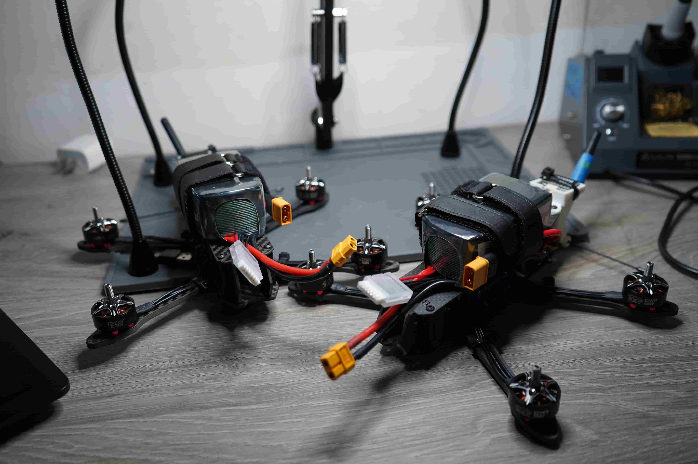
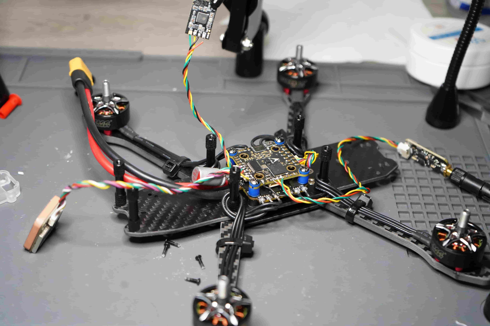
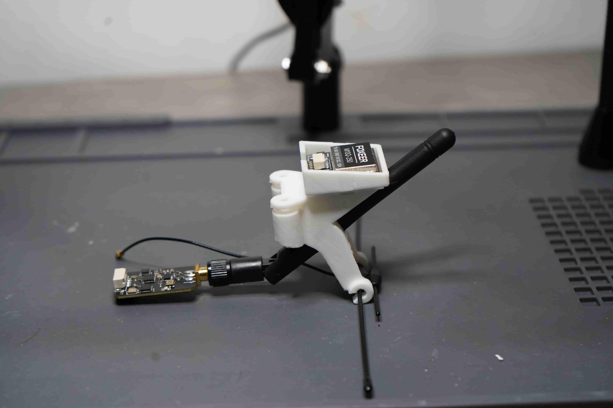
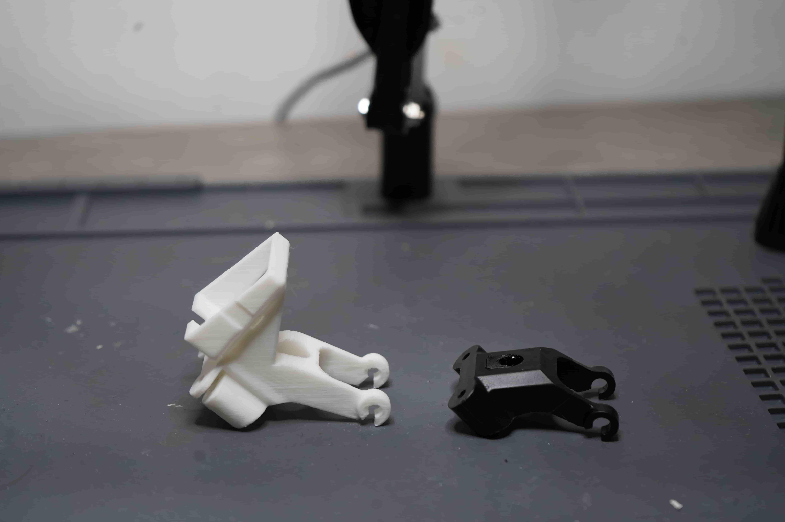
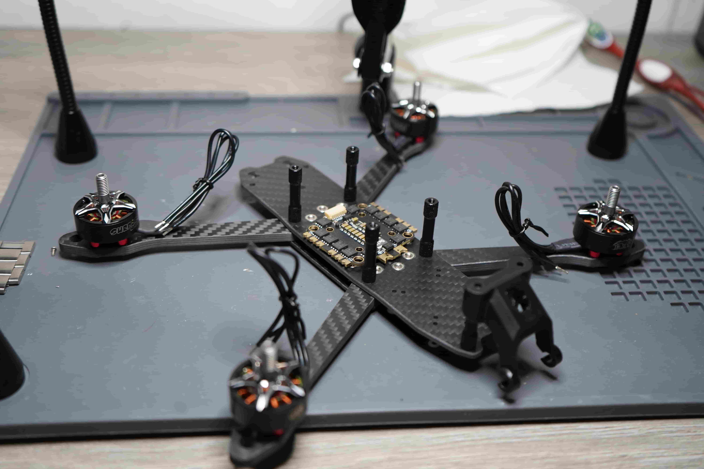

Overview

Decurion is a manned-unmanned teaming system in active development. The simulation side, built in ArduPilot SITL and running through Mission Planner, is largely working: I can currently command two drones by voice in simulation. The physical build is underway, with the first and second drone nearing completion.
Both drones can be pictured above.
The Problem / Thesis
Modern drone operations are bottlenecked by a 1:1 ratio — one operator, one vehicle. As defense and commercial applications move toward multi-asset missions, that ratio doesn't scale. The real bottleneck isn't the drones; it's command and coordination.
Decurion is a coordination system for multiple drones, built around a ground station that tracks every vehicle, relays position and state between them, and lets one person direct the whole team instead of babysitting each drone individually. Voice is the interface — it's how commands get in — but the real work is underneath: routing commands to the right vehicle, keeping followers in sync with their leader, and giving one operator a coherent picture of a multi-drone mission instead of a wall of individual controls.
Approach
I started from the single-drone command toolkit — connect, arm, takeoff, land — so every later layer could build on it without a rewrite, and worked through three iterations:
- Baseline — At its core, this system organizes and commands drones. We start with a simplified version of that: two drones, working as a coordinated pair.
- Software — The first software layer is a network of scripts, each built around one simple component at a time — starting with a local voice-to-text system.
- Prototype 1 — Combine the software and the hardware into a first working prototype.
Each iteration was proven in SITL before I trusted it enough to move toward real hardware — logic that looks clean in simulation doesn't always survive real radios, real latency, and real timing.
Proof of Concept
Recordings from testing and simulation, demonstrating the system working end to end.
Two-drone voice command, SITL. First end-to-end run of the voice interface commanding two simulated drones through Mission Planner — describes what's happening, when it broke, and what it proves.
Engineering Log
Concept & scoping — from weaponized vehicle to command system.
The project began as a weaponized RC-plane concept and evolved, through iteration, into its real thesis: a single-operator system for commanding multiple drones. I recognized that the valuable, industry-relevant problem wasn't any individual vehicle but the command-and-control layer — and scoped the project to build that core first rather than chasing exotic hardware.
Hardware architecture & validation.
Specified a 5-inch, 6S ArduPilot quadcopter and validated every critical component — most importantly verifying the flight controller against ArduPilot's own firmware server rather than trusting vendor "compatibility" claims. Designed the power system, radio links (separate control and telemetry channels), and a custom 3D-printed mount consolidating the GPS, telemetry radio, and receiver.
Command spine — from simulation to code-controlled flight.
Stood up an ArduPilot software-in-the-loop (SITL) environment and built a Python/pymavlink command toolkit: connect, arm, takeoff, navigate-to-point, and land — each verified by reading the drone's telemetry back rather than assuming commands succeeded. Structured as a reusable library so every higher layer builds on the same foundation.
Voice control & multi-drone routing.
Added an offline voice-command pipeline (local speech recognition + a deterministic two-stage parser: identify the target drone, then the action), enabling spoken commands routed to a specific drone — "Alpha, take off" versus "Bravo, take off." Chose offline/deterministic over a cloud model for reliability and field-deployability.
Leader-follower teaming.
Implemented autonomous following, where the ground station relays a leader drone's position to a follower in real time, achieving stable formation tracking. Logged follow performance to analyze and tune tracking behavior — demonstrating closed-loop measurement, not just a working demo.
Skills & Tags
Photo Gallery



